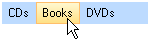
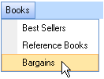

Adding and Removing Items
Adding Menu Items
To add top level "main" menu items use the RadMenu Items__collection and the __RadMenuItem Items__collection for sub menu items. Here are a few examples using overloads of the __RadMenuItem. The first uses a parameter-less constructor, assigns the __RadMenuItem Text__property and finally adds the menu item to the __RadMenu Items__collection. The second example uses the easiest way to include and add menu items all at one time where a constructor that has a single string __Text__parameter. The last example uses a constructor with a second object __Tag__parameter that you can store any arbitrary data in.

[C#] Constructing and adding menu items
RadMenuItem cdItem = new RadMenuItem();
cdItem.Text = "CDs";
radMenu1.Items.Add(cdItem);
radMenu1.Items.Add(new RadMenuItem("Books"));
int someData = 123;
RadMenuItem dvdItem = new RadMenuItem("DVDs", someData);
radMenu1.Items.Add(dvdItem);
[VB.NET] Constructing and adding menu items
Dim cdItem As New RadMenuItem()
cdItem.Text = "CDs"
RadMenu1.Items.Add(cdItem)
RadMenu1.Items.Add(New RadMenuItem("Books"))
Dim someData As Integer = 123
Dim dvdItem As New RadMenuItem("DVDs", someData)
RadMenu1.Items.Add(dvdItem)
Adding Sub Menu Items
Adding sub menu items plays by the same rules as adding items to the RadMenu____Items collection except here we use the Items collection of another RadMenuItem. In the code example below a reference to the first menu item "Books" is retrieved and several RadMenuItems are added to the "Books" menu __Items__collection. Also notice that a Click event handler is attached to the last "Bargains" menu item.

[C#] Adding menu sub items
void Form1_Load(object sender, EventArgs e)
{
radMenu1.Items.Add(new RadMenuItem("Books"));
RadMenuItem item = radMenu1.Items[0] as RadMenuItem;
item.Items.Add(new RadMenuItem("Best Sellers"));
item.Items.Add(new RadMenuItem("Reference Books"));
RadMenuItem bargainItem = new RadMenuItem("Bargains");
bargainItem.Click += new EventHandler(menuItem_Click);
item.Items.Add(bargainItem);
}
void menuItem_Click(object sender, EventArgs e)
{
RadMenuItem item = (sender as RadMenuItem);
MessageBox.Show(item.Text + " was clicked.");
}
[VB.NET] Adding menu sub items
Private Sub Form1_Load(ByVal sender As Object, ByVal e As EventArgs)
RadMenu1.Items.Add(New RadMenuItem("Books"))
Dim item As RadMenuItem = TryCast(RadMenu1.Items(0), RadMenuItem)
item.Items.Add(New RadMenuItem("Best Sellers"))
item.Items.Add(New RadMenuItem("Reference Books"))
Dim bargainItem As New RadMenuItem("Bargains")
AddHandler bargainItem.Click, AddressOf menuItem_Click
item.Items.Add(bargainItem)
End Sub
Private Sub menuItem_Click(ByVal sender As Object, ByVal e As EventArgs)
Dim item As RadMenuItem = (TryCast(sender, RadMenuItem))
MessageBox.Show(item.Text & " was clicked.")
End Sub
Adding a RadMenuComboItem
RadMenuComboItems are constructed with no parameters and then the ComboBoxElement Items collection is used to populate the drop-down list.

[C#] Adding sub items
RadMenuItem bargainItem = new RadMenuItem("Bargains");
RadMenuComboItem comboItem = new RadMenuComboItem();
comboItem.ComboBoxElement.Items.Add(new RadListDataItem("$5 - $10"));
comboItem.ComboBoxElement.Items.Add(new RadListDataItem("$10 - $20"));
comboItem.ComboBoxElement.Items.Add(new RadListDataItem("$20 - $50"));
bargainItem.Items.Add(comboItem);
radMenu1.Items.Add(bargainItem);
[VB.NET] Adding sub items
Dim bargainItem As New RadMenuItem("Bargains")
Dim comboItem As New RadMenuComboItem()
comboItem.ComboBoxElement.Items.Add(New RadListDataItem("$5 - $10"))
comboItem.ComboBoxElement.Items.Add(New RadListDataItem("$10 - $20"))
comboItem.ComboBoxElement.Items.Add(New RadListDataItem("$20 - $50"))
bargainItem.Items.Add(comboItem)
RadMenu1.Items.Add(bargainItem)
Performance
For best performance when performing long running operations, such as loading a number of menu items from a database, call the BeginInit() and EndInit() methods to suspend layout of the menu.
[C#] Suspending the layout
radMenu1.BeginInit();
// ... perform operations
radMenu1.EndInit();
[VB.NET] Suspending the layout
RadMenu1.BeginInit()
' ... perform operations
RadMenu1.EndInit()
Removing Menu Items
Remove items from the items collection using Remove() or RemoveAt() methods. RemoveAt() takes integer position of the item in the collection, Remove() takes a reference to the menu item to be removed.
[C#] Removing items
// remove second item in collection
radMenu1.Items.RemoveAt(1);
// Remove the zero-ith ite
radMenu1.Items.Remove(radMenu1.Items[0]);
[VB.NET] Removing items
' remove second item in collection
RadMenu1.Items.RemoveAt(1)
' Remove the zero-ith ite
RadMenu1.Items.Remove(RadMenu1.Items(0))